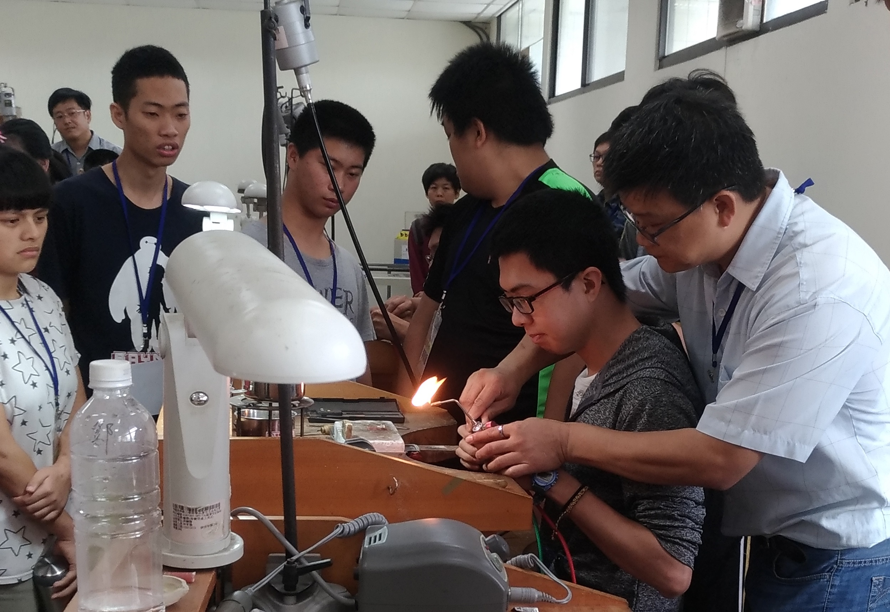
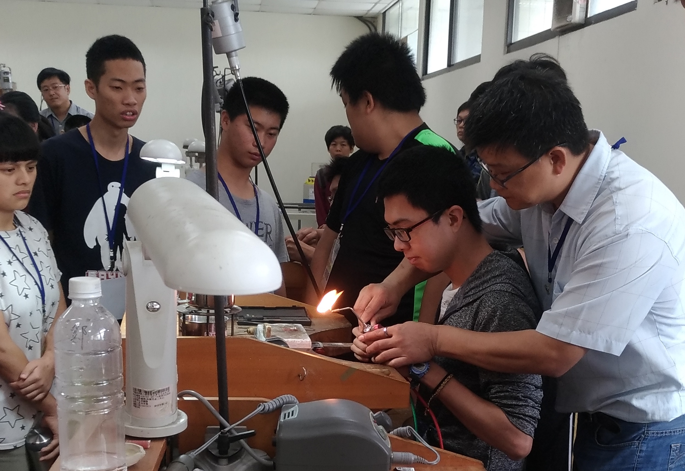

;
泰山職訓場
;
;
 

泰山訓練場（泰山職訓中心、泰山職訓）是勞動部勞動力發展署北基宜花金馬分署的所屬訓練場，位於新北市泰山區明志科技大學後方，
1968年成立。主要提供職前訓練、訓練研究發展及推廣業務、台德菁英專案計畫、辦理資訊軟體人才、新興重點發展產業科技人才職業訓練業務。
● PHP資料庫網頁設計 ●
PHP介紹 及Perl等語法相似，且學習起來更容易上手。 PHP的目地是為了能使網站開發者可以快速地撰寫動態網頁。
PHP是在伺服器端執行的程式語言，所以任何其它的CGI程式所能做得到的，它都能做到。
;
點我看更多